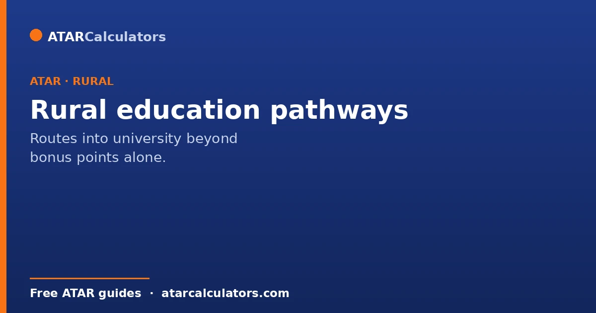
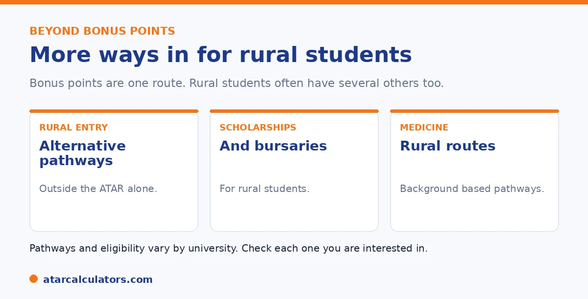

Here is the short version. Beyond bonus points, rural and regional students often have several routes into university. These include rural entry schemes and alternative pathways, scholarships and bursaries, and background-based pathways into competitive courses, especially medicine. The exact programs vary by university, so the best approach is to check each university and look beyond adjustment factors alone.
Many rural students focus only on bonus points, and miss the wider range of pathways available to them. There is often more than one way in.
Below are the main routes beyond bonus points. To see how regional points fit in, use our regional points calculator.
Key takeaways
- Bonus points are just one route into university.
- Look for rural entry schemes and alternative pathways.
- Look for scholarships and bursaries for rural students.
- Competitive courses often have background-based pathways.
- Medicine is the clearest example of a rural pathway.
- Programs vary by university, so check each one.
Beyond bonus points
Bonus points help, but they are only one tool. Rural and regional students often have other pathways too. These can matter just as much, sometimes more.

So if you are a rural student, do not stop at bonus points. Look at the wider range of options below.
Rural entry schemes and alternative pathways
Some universities run rural entry schemes for students from rural and regional areas. These offer a different route to a place, beyond the usual selection rank process.
The form varies. Some lower the entry bar, some hold reserved places, and some run bridging programs. Check each university for what it offers rural students.
Scholarships and bursaries
Cost is often the biggest barrier for rural students, especially if you have to move. Many universities and outside groups offer scholarships and grants for rural and regional students.
These can help with fees, housing, or moving costs. Search early, since some have deadlines near application time. See our guide on universities for regional students.
Want to see how regional points fit in?
Try the regional points calculator →Rural pathways for medicine
For medicine, rural pathways are especially important. Many universities run pathways for students from a rural area. They exist because these students are more likely to work in rural areas later.
These can involve a lower entry bar, reserved places, or rural clinical training. If you are a rural student aiming for medicine, this is often the best route to explore. See our medicine entry guide.
Rural entry into medicine deserves a closer look, because the support is more substantial than for most degrees. The reasoning is straightforward. Australia has a persistent shortage of doctors outside the cities. So medical schools actively lower barriers for students from rural backgrounds, who are statistically more likely to practise rurally later. In practice, this can mean a meaningfully lower ATAR requirement, and a set number of places reserved for rural applicants. It can also mean clinical training based in regional centres during the degree.
Eligibility hinges on genuine rural residency. This usually means living for a qualifying period in a postcode classified as rural or remote, verified against a national geographic standard. So the single most important step is to confirm your eligibility early, ideally well before Year 12. Keep evidence of your address history too. Some schemes combine rural background with the standard ATAR-plus-admissions-test-plus-interview model, but weight the rural component heavily. Others run a distinct rural stream with its own places.
For a committed student from the country, these pathways are frequently the most realistic route into direct-entry medicine, not a lesser option. They also come with the added draw of training in the communities many rural students want to serve.
Bonded and rural-stream places
In competitive courses like medicine, some places are set aside for rural students through rural-stream or bonded schemes. Bonded places may come with a commitment to work in a regional or areas-of-need location for a period after graduating, in return for entry.
So a rural background can open doors to competitive courses that would otherwise be very hard to enter. These places recognise the need for professionals in regional areas, and they are worth investigating if you are from a rural background.
How to access these schemes
Accessing rural pathways, scholarships and reserved places usually requires an application, often with evidence of your rural background, such as your address history. Each scheme has its own criteria, process and deadlines, set by the university.
So finding that you may qualify is the first step; you then need to apply and provide evidence by the deadline. It is worth researching these schemes early, since they can be the key to a competitive course for a rural student.
Common questions
What is the rural education scheme?
There is no single national scheme. Instead, many universities offer their own rural entry schemes, alternative pathways, scholarships, and background-based pathways into competitive courses. The programs vary by university, so check each one you are interested in.
What rural pathways exist beyond bonus points?
Several. These include rural entry schemes and alternative pathways, scholarships and bursaries for rural students, and background-based pathways into competitive courses like medicine. The exact options vary by university.
Do rural students get scholarships and support?
Yes. Many universities and external bodies offer scholarships and bursaries aimed at rural and regional students, which can help with tuition, accommodation, or relocation. Search each university's scholarship page early, as some have deadlines.
Is there a rural pathway into medicine?
At many universities, yes. Rural background pathways into medicine support students from rural areas, recognising they are more likely to work rurally later. These can involve adjusted requirements, reserved places, or rural clinical training.
Where do I find rural pathways?
Check each university directly, since the programs vary and there is no single national scheme. Look on the university's admissions and equity pages, and contact the university if you are unsure what applies to you.
See how regional points fit in
Estimate how regional points could change your selection rank. Free, and no signup.
Open the regional points calculator →Related guides
This guide is general information for students and parents, not formal admissions advice. Adjustment factors, schemes, caps and course cut-offs are set by each university and can change every year. They differ from one institution to another, and from course to course within the same institution. Always confirm the current details with the specific university and your state admissions centre (UAC, VTAC, QTAC, SATAC or TISC). A useful starting point is UAC's guide to selection rank adjustments. Reviewed by the ATARCalculators Editorial Team.